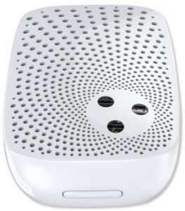
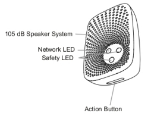

AEOTEC SIREN ALARM¶
Siren Gen5, ZW080-A17, by Aeotec, Cert ID: ZC10-14090012¶

Specification¶
- Model number: ZW080
- Built-in Lithium Battery: 430 mAh.
- Alarm Power: 1.7W.
- Max Standby Power: 0.7W.
- Max Volume: 105 dB, reduced in battery powered mode.
- Operating Temperature: 0 -> 45°C
- Operating Distance: Up to 550 feet/170 metres outdoors.
Basic operation¶

- When trigger, device is activated with 105 dB Speaker System and brigth LED system.
- With back-up battery system, it also works in case of power-down.
Inclusion/Exclusion to/from a network¶
- Put controller to “Inclusion/Exclusion” mode
- Place the siren/strobe within 3 feet of the Controller
- Press Action button once
Functions of z-wave button¶
- Press once: add/remove siren to/from z-wave network
- Press and hold 5~8 seconds: cancel alarm status or test the sound
- Press and hold 20 seconds and release: Reset siren to factory default setting
Factory reset¶
Press and hold the Action Button for 20 seconds and then release it. Your Siren will now be reset to its original settings, and the speaker system will sound for 3 seconds as a confirmation.
Configuration description¶
- Parameter 37: Alarm sound and volume
This setting adjusts type of alarm sound and volume. High byte is used for alarm type and low byte is used for volume. - Parameter: 37 (0x25) - Length: 2 Byte (1) The value1 (High Byte) is used to select the Siren sound :
Value1=0, do not change the current Siren sound. Value1=1, Siren sound 1 is selected. Value1=2, Siren sound 2 is selected. Value1=3, Siren sound 3 is selected. Value1=4, Siren sound 4 is selected. Value1=5, Siren sound 5 is selected. Other values will be ignored.
- The value2 (Low Byte) is used to adjust the volume:
Value2=0, do not change the current volume. Value2=1, set the volume to 88 dB. Value2=2, set the volume to 100 dB. Value2=3, set the volume to 105 dB. Other values will be ignored.
- Default: Value1 = 1, Value2 = 3.
- Parameter 80: Enable to send notifications to associated devices (Group 1) when the state of Siren changed
- Parameter: 80 (0x50)
- Size: 1 byte
- Value: 0=nothing, 1=hail CC,2=basic CC report
- Default: 0=nothing
- Parameter 252: Enable/disable Lock Configuration
Parameter: 252 (0xFC)
Size: 1 byte
- Value:
Value=0, the setting of configuration parameters is allowed. Value=1, all configuration parameters cannot be set (Locked).